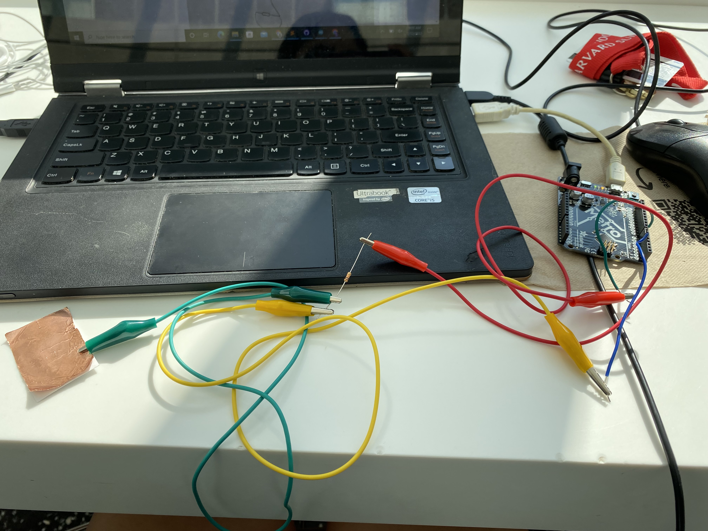
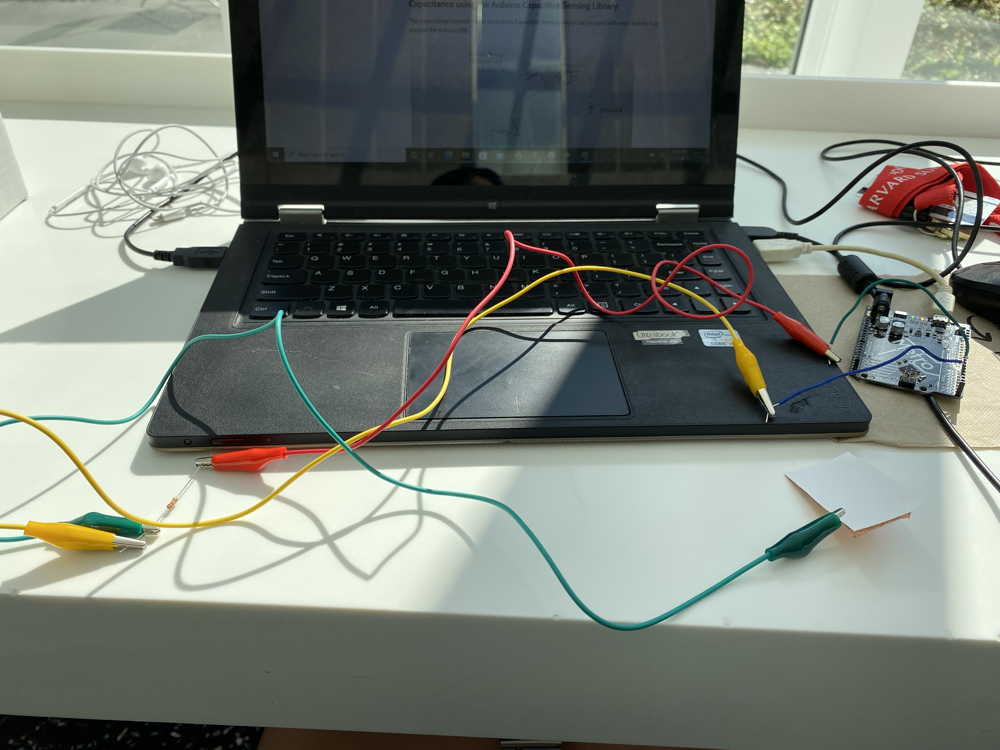
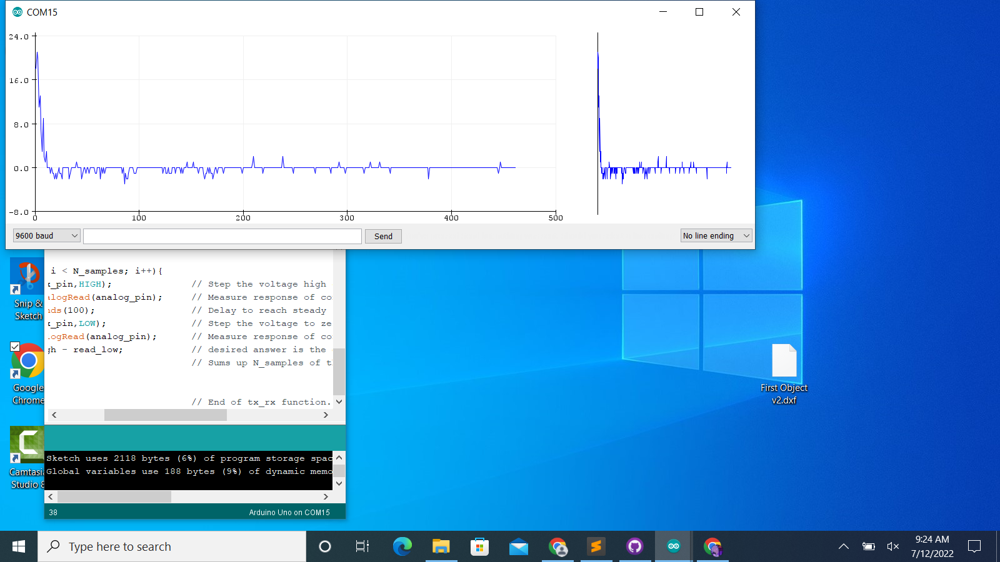

### Week 6
For week 6, although I was absent for the lecture because of food poisoning, it didn't take long to learn how to make these devices. My first task was to use a sensor from the kit to measure a physical quantity with my microcontroller, so I decided to use sound, and to measure the sound of the taps I made based on how hard and soft I tapped the MEMS microphone.
<img src="micro.HEIC">
<img src="micro2.HEIC">
Here is the video of how the plot graph showing how the sound of my taps are affecting it.
<video controls>
<source src="IMG_6518.MOV.mov" type="video/mp4" onresize="500">
</video>
For the capacitator, it took a lot of work to figure it out, mostly because the sensor was pretty weak at first, so I had to give it a stronger resister to increase the sensitivity. This is what the final outcome looks like.


This is what the graph looked like from me pressing my finger up and down onto the sensor, and I included the code I used.

long result; //variable for the result of the tx_rx measurement.
int analog_pin = A3;
int tx_pin = 4;
void setup() {
pinMode(tx_pin, OUTPUT); //Pin 4 provides the voltage step
Serial.begin(9600);
}
void loop() {
result = tx_rx();
Serial.println(result);
}
long tx_rx(){ // Function to execute rx_tx algorithm and return a value
// that depends on coupling of two electrodes.
// Value returned is a long integer.
int read_high;
int read_low;
int diff;
long int sum;
int N_samples = 100; // Number of samples to take. Larger number slows it down, but reduces scatter.
sum = 0;
for (int i = 0; i < N_samples; i++){
digitalWrite(tx_pin,HIGH); // Step the voltage high on conductor 1.
read_high = analogRead(analog_pin); // Measure response of conductor 2.
delayMicroseconds(100); // Delay to reach steady state.
digitalWrite(tx_pin,LOW); // Step the voltage to zero on conductor 1.
read_low = analogRead(analog_pin); // Measure response of conductor 2.
diff = read_high - read_low; // desired answer is the difference between high and low.
sum += diff; // Sums up N_samples of these measurements.
}
return sum;
} // End of tx_rx function.